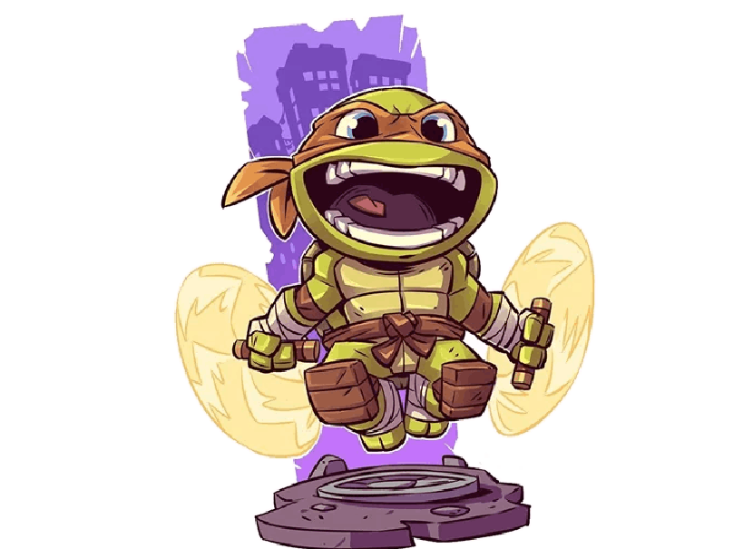

Michelangelo
Por lo general, se le representa con una máscara de ojo naranja. Sus armas distintivas son nunchaku dual, aunque también se lo ha retratado usando otras armas, como un gancho de agarre, manriki-gusari, tonfa y un bastón de tres secciones (en algunas figuras de acción).
Michelangelo, más amante de la diversión que sus hermanos y el más joven del grupo, recibió un papel mucho más importante en la serie de dibujos animados de 1987, dirigida a un público más joven, que en los cómics originales más serios, que estaban dirigidos a un mayor audiencia. A menudo acuña la mayoría de sus frases, como "¡Cowabunga!"